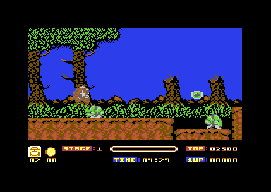

<meta charset="utf-8">
<meta name="viewport" content="width=device-width, initial-scale=1">
<title>{{title}}</title>
<link rel="preconnect" href="https://fonts.googleapis.com">
<link rel="stylesheet" href="https://fonts.googleapis.com/css2?family=Lato:wght@400;700;900&family=IBM+Plex+Mono:wght@400;500&display=swap">
<style>
:root{
  --bg:#23262d; --paper:#e9e7e1; --surface:#ffffff; --surface-2:#f1efea; --line:#d5d3cc; --line-soft:#e0ded8;
  --ink:#2f3136; --ink-soft:#55585f; --ink-mute:#80838a;
  --link:#1f5fa8; --link-hover:#154480; --accent:#1f5fa8;
  --amber:#c25a00; --cyan:#1f5fa8; --coral:#d04a3a; --green:#2a8a4a; --violet:#4a5bd6; --hl:#fff0c2;
  --chip:#2f3136; --chip-ink:#ffffff;
  --c64blue:#40318d; --c64grey:#686868;
  --fd:'Lato',system-ui,sans-serif; --fb:'Lato',system-ui,sans-serif; --fm:'IBM Plex Mono',ui-monospace,Menlo,monospace;
  --col:1080px; --gx:68px; --fs:17px; --lh:1.6; --hw:900; --h1:46px; --h2:26px; --sy:48px; --pp:26px; --r:10px;
  --plate-shadow:0 1px 2px rgba(0,0,0,.05),0 4px 14px rgba(0,0,0,.05);
}
*{box-sizing:border-box}
html{background:var(--bg);min-height:100%}
body{background:var(--paper);color:var(--ink);font-family:var(--fb);font-size:var(--fs);line-height:var(--lh);max-width:var(--col);margin:0 auto;min-height:100vh;padding:0 0 4rem}
h1,h2,h3{font-weight:var(--hw);letter-spacing:-.01em;text-wrap:balance;color:var(--ink);margin:0}
.wrap{padding:0 var(--gx)}
.hero{padding:48px var(--gx) 8px;text-align:left}
.eyebrow{font-family:var(--fm);font-size:12px;letter-spacing:.08em;text-transform:uppercase;color:var(--ink-mute);margin:0 0 10px}
.hero h1{font-size:var(--h1);line-height:1.15;letter-spacing:-.02em;margin:0 0 14px}
.hero .sub{margin:0 0 .6em;color:var(--ink-soft)}
section{padding:var(--sy) 0 24px}
section:last-of-type{border-bottom:none}
.fig{font-family:var(--fm);font-size:12px;letter-spacing:.08em;text-transform:uppercase;color:var(--ink-mute);margin:0 0 10px}
h2.t{font-size:var(--h2);margin-bottom:12px}
.lede{color:var(--ink-soft);margin:0 0 30px}
.plate{background:var(--surface);border:1px solid var(--line);border-radius:var(--r);padding:var(--pp);box-shadow:var(--plate-shadow)}
.cap{font-size:14px;color:var(--ink-mute);margin-top:14px;line-height:1.55}
.cap b{color:var(--ink);font-weight:700}
code{font-family:var(--fm);font-size:.82em;background:var(--chip);color:var(--chip-ink);border-radius:4px;padding:2px 6px;white-space:nowrap}

</style>
<!--
  Template for a game article. Keep it self-contained: inline CSS and JS,
  fonts are the only external resource, opens from disk. The section below
  shows the parts a section is made of, not which section comes first: the
  kinds of section are listed in kit/skills/core/70-minisite, in no order,
  and this page's order is its own. The best thing to press or hear goes
  as high as the explanation lets it, and every section should have
  something the reader can press. Copy follows kit/style.md and is written
  last.
-->
<!-- tabs -->
<header class="hero">
  <p class="eyebrow">Commodore 64 · 1991 · Ocean Software</p>
  <h1>Toki</h1>
  <p class="sub">Ocean's conversion of TAD Corporation's 1989 arcade platformer, in which a warrior turned into an ape spits fireballs to rescue his captured love. On the C64 it shipped only as a 128 KB cartridge.</p>
</header>
<main class="wrap">
<section>
  <p class="fig">01 · The cartridge</p>
  <h2 class="t">Sixteen banks behind one window</h2>
  <p>The cartridge holds 128 KB in sixteen 8 KB banks, and the C64 sees one bank at a time in the window at $8000. The image's header names it an Ocean type 1 cartridge (CRT hardware type 5) titled TOKI. Bank 0 starts with the C64's autostart signature, CBM80 at $8004, so the machine jumps straight into the cartridge at $812C when it is switched on.</p>
  <div class="plate"><p class="cap"><b>Stage 1, Labyrinth of Caves.</b> Fire on the title screen leads to a stage card with a choice of sound effects or music; fire again starts play.</p></div>
  <p>Nothing else about the program has been explained yet: the code has not been read.</p>
</section>
</main>
<footer style="margin:16px 0 0;padding:22px var(--gx) 0;border-top:1px solid #e0ded8;font-family:'IBM Plex Mono',ui-monospace,Menlo,monospace;font-size:12px;color:#80838a"><a href="https://github.com/gamesexplained/gamesexplained" style="color:#1f5fa8;text-decoration:none">GitHub</a> · <a href="https://discord.gg/3V9GWyRDWV" style="color:#1f5fa8;text-decoration:none">Discord</a><br>© Games Explained contributors. Write-ups, facts and symbol maps are available under <a href="https://creativecommons.org/licenses/by-sa/4.0/" style="color:#1f5fa8;text-decoration:none">CC BY-SA 4.0</a>; code under <a href="https://opensource.org/licenses/MIT" style="color:#1f5fa8;text-decoration:none">MIT</a></footer>
<script>
// Inline everything. Data extracted from the snapshot goes here as arrays.
</script>
